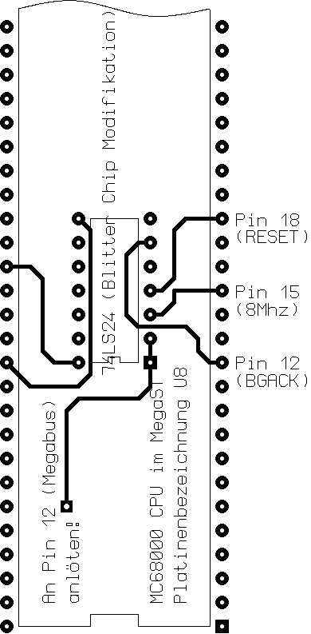

Previous
Next
TOC
Soll der Blitter trotz der Beschleunigerkarte benutzt werden, ist
folgende Modifizierung durchzuführen (zusätzliches IC einlöten!).

weiterblättern
Kapitel Die Reparaturtips für 260/520/1040/MegaST, Seite 9